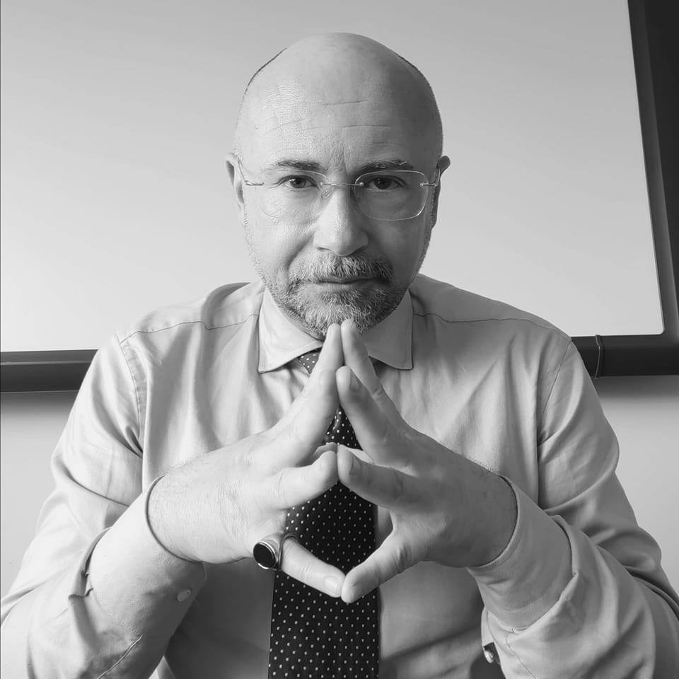
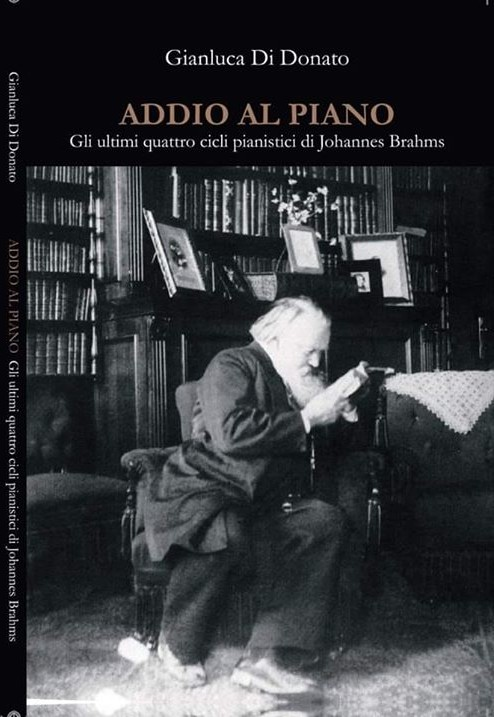
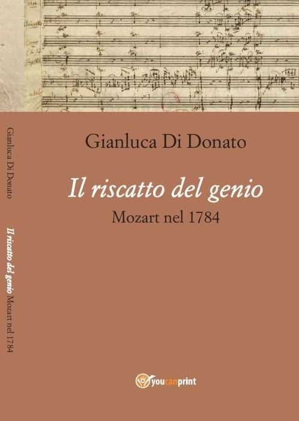
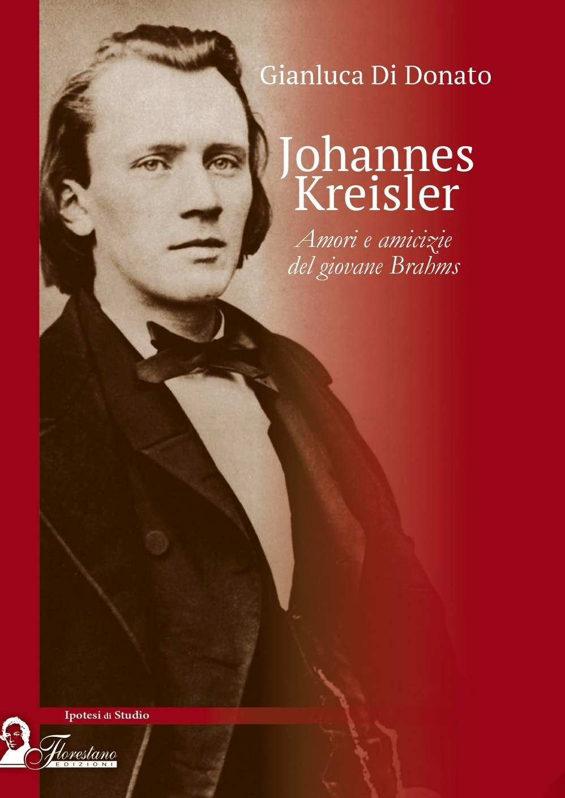
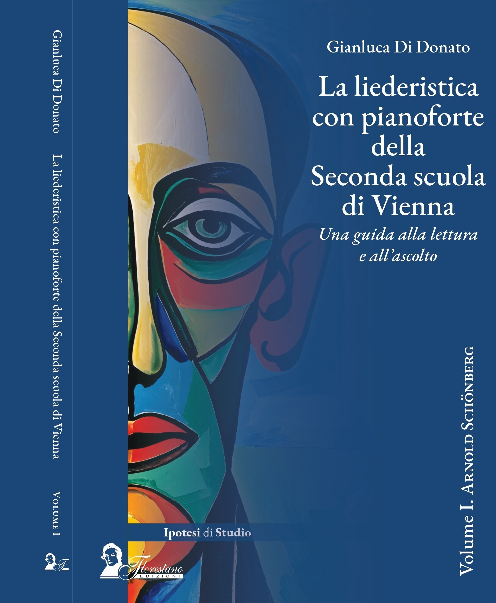
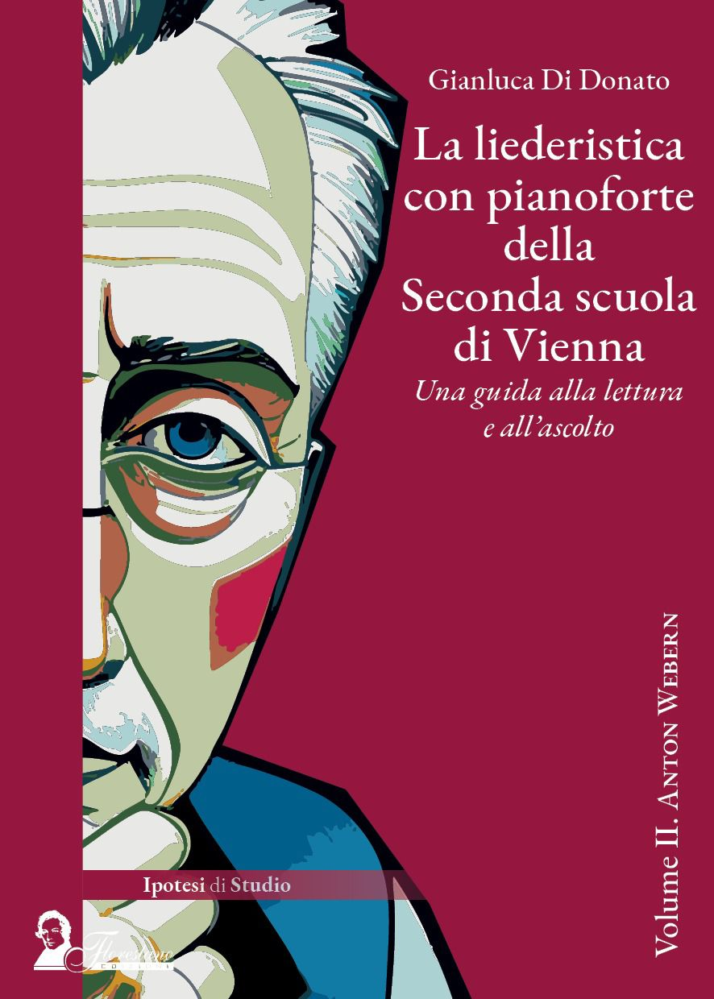
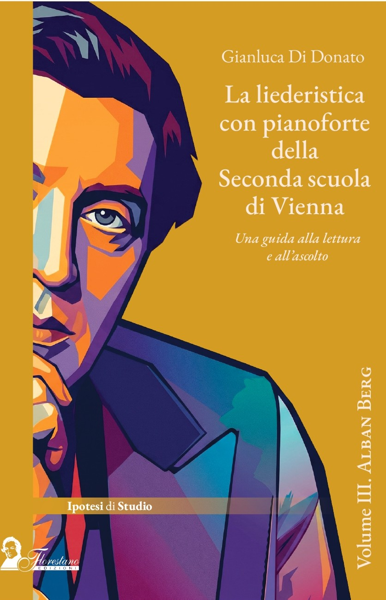
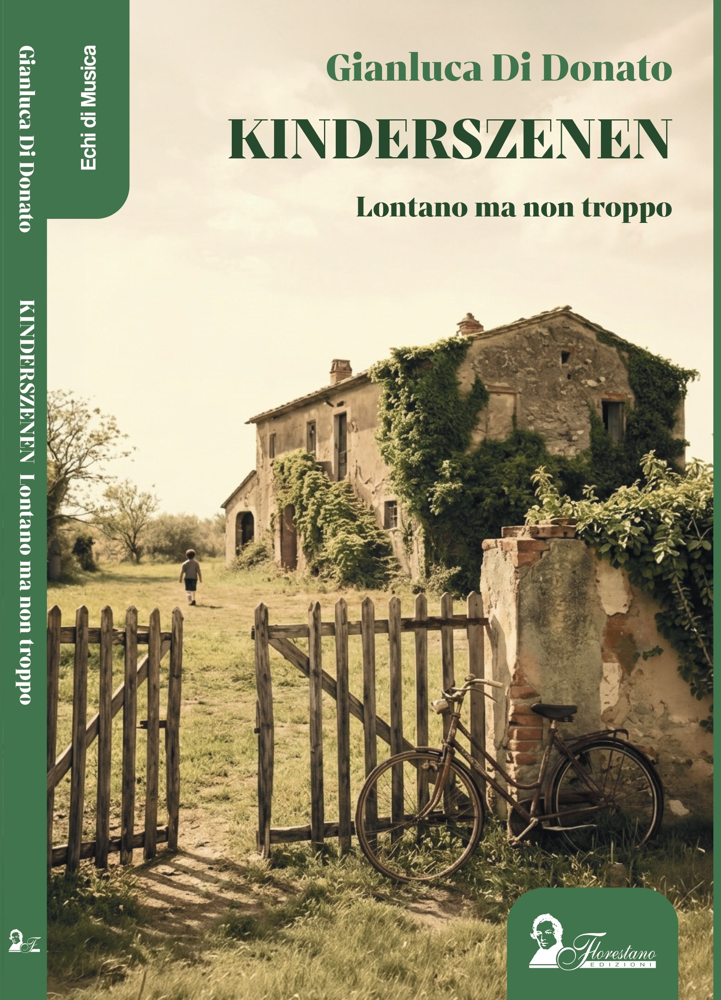
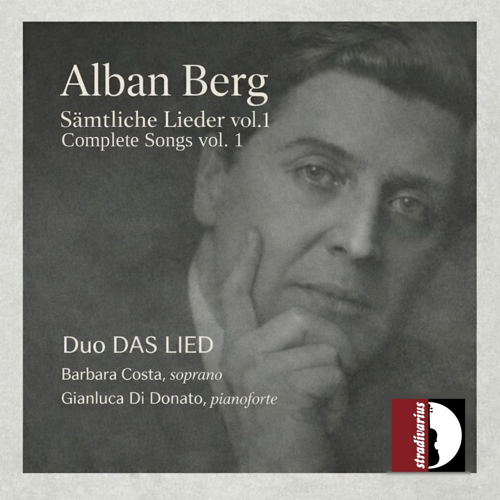

Nato ad Avellino nel 1972, Gianluca Di Donato è allievo di Aldo Ciccolini e tiene concerti in tutta Europa dal 1991. Riconosciuto come uno dei principali interpreti italiani di Franz Schubert, è stato il primo pianista italiano ad eseguire dal vivo l'integrale della produzione pianistica del compositore viennese. Laureato in Lettere Moderne e Filosofia presso l'Università di Fisciano, ha conseguito anche la laurea in Musicologia alla Sapienza di Roma e la specializzazione in sostegno didattico all'Università di Foggia. Nel corso della sua carriera ha ricevuto diversi riconoscimenti per la sua attività di concertista e musicologo.
Dal 2013 al 2016 ha realizzato il Progetto Mozart, eseguendo l'integrale della produzione per e con pianoforte del salisburghese, attività che gli è valsa il Premio Sublimitas nel 2013. Dal 2015 al 2017 ha eseguito, per la seconda volta, il ciclo integrale delle sonate per pianoforte di Schubert, per GOG di Genova, Amici della Musica di Ferrara, Ravello Concert Society, e Concerti Unitus di Viterbo.
La sua attività saggistica comprende Addio al piano - Gli ultimi quattro cicli pianistici di Johannes Brahms (2019), Il riscatto del genio - Mozart nel 1784 (2020) e Johannes Kreisler Junior - Amori e amicizie del giovane Brahms (Florestano, 2022). Nel 2023 ha contribuito al volume Discorsi sulla bellezza con il saggio Il concetto di bello nella storia della musica. Dal 2020 fa parte dello staff scientifico di lvbeethoven.it e dal 2022 è redattore del sito di musicologia Quinte Parallele. Tra il 2021 e il 2023 ha ideato e condotto la rubrica Lezioni di musica su Radio Mozart Italia.
Un progetto particolarmente significativo, avviato nel maggio 2022, è stata l'esecuzione in prima mondiale delle Sinfonie di Schubert nella trascrizione per pianoforte di Jan Brandts Buys, revisionata dallo stesso Di Donato, eseguita a Trapani e Calatafimi per la MEMA. Nel luglio 2024 la Florestano Edizioni ha pubblicato il primo di tre volumi dedicati alla liederistica con pianoforte della Seconda Scuola di Vienna, incentrato su Arnold Schönberg. Ad ottobre 2025 è uscito il secondo volume, dedicato ad Anton Webern.
A febbraio 2026 ha intrapreso insieme al soprano Barbara Costa, con la quale forma il duo DAS LIED, l'esecuzione integrale, per la prima volta in Italia della produzione liederistica con pianoforte della Seconda Scuola di Vienna per la Società del Quartetto di Bergamo. Sempre in duo, debutterà il prossimo 23 novembre al Musikverein di Vienna. A maggio 2026 è uscito il suo primo libro di narrativa, sempre per la Florestano, Kinderszenen. Lontano ma non troppo. A fine agosto uscirà per la Stradivarius il primo cd dell'integrale della liederistica di Alban Berg, che sarà anche l'oggetto della nuova pubblicazione editoriale, a dicembre, che chiuderà la trilogia intrapresa nel luglio 2024. Parallelamente svolgerà un'intensa attività come musicologo che lo porta a tenere conferenze e relazioni in contesti prestigiosi, come il Festival Luigi Nono e Il saggiatore musicale di Bologna.
Inoltre, dal 2026 collaborerà per quattro anni, in qualità di consulente scientifico per la musicologia, con il Dipartimento di Filosofia, Sociologia, Pedagogia e Psicologia Applicata (FISPPA) dell'Università degli Studi di Padova per l'Unità di Progetto CISSE, Centro Studi Interdisciplinare sugli Stati Emotivi.
Lecture: L'utopia del Wanderer. Fragment, silence and listening in Luigi Nono's music
Presentazione Libro e Concerto Duo DAS LIED (Barbara Costa, soprano)
Presentazione del libro: La liederistica con pianoforte della seconda scuola di Vienna, Vol. 2. Anton Webern (Florestano Edizioni)
Programma: Schönberg (Lieder op. 1), Wagner (Wesendonck Lieder), Brahms (Klavierstücke op. 119), Berg (Sieben frühe Lieder)
Lecture: Due occhi, due epoche. Alban Berg and the Lied Schliesse mir die Augen beide
Presentazione Libro e Concerto Duo DAS LIED (Barbara Costa, soprano)
Presentazione del libro: La liederistica con pianoforte della seconda scuola di Vienna, Vol. 2. Anton Webern (Florestano Edizioni)
Programma: Schönberg (Lieder op. 1), Webern (Lieder op. 3), Berg (Sonata op. 1), Berg (Sieben frühe Lieder)
Presentazione Libro e Concerto Duo DAS LIED (Barbara Costa, soprano)
Presentazione del libro: La liederistica con pianoforte della seconda scuola di Vienna, Vol. 1, Schönberg (Florestano Edizioni)
Programma: Schönberg (Lieder op. 1), Wagner (Wesendonck Lieder), Brahms (Fantasien op. 116), Berg (Sieben frühe Lieder)
Presentazione Libro e Concerto Duo DAS LIED (Barbara Costa, soprano)
Presentazione del libro: La liederistica con pianoforte della seconda scuola di Vienna, Vol. 2. Anton Webern (Florestano Edizioni)
Programma: Schönberg (Lieder op. 1), Webern (Lieder op. 3), Brahms (Fantasien op. 116), Berg (Sieben frühe Lieder)
Concerto Duo DAS LIED (Barbara Costa, soprano)
Complete Lieder with piano of the Second Viennese School (1st concert)
Programma: Schönberg (Lieder op. 1), Webern (Lieder op. 3), Brahms (Fantasien op. 116), Berg (Sieben frühe Lieder)
Presentazione Libro e Lecture
Presentazione del libro: La liederistica con pianoforte della seconda scuola di Vienna. Vol. 1 - Arnold Schönberg (Florestano Edizioni)
Lecture: The evolution of the Lied from Schubert to Webern (Part One)
Recital Pianistico: IL MONDO DI IERI
Programma: Berg (Sonata op. 1), Schubert/Buys (Symphony No. 8 D.759), Brahms (Klavierstücke op. 119)
Recital Pianistico: Complete Schubert Symphonies (Buys transcription - World Premiere - 4th concert)
Programma: Symphony No. 8 D. 759, Symphony No. 9 D. 944 "The Great"
Presentazione Libro e Concerto Duo DAS LIED (Barbara Costa, soprano)
Presentazione del libro: La liederistica con pianoforte della seconda scuola di Vienna, Vol. 2. Anton Webern (Florestano Edizioni)
Programma: Webern (Eight Early Songs), Wagner (Wesendonck Lieder), Brahms (Klavierstücke op. 119), Berg (Sieben frühe Lieder)
Conferenza: Seconda Scuola di Vienna e arti visive - Tre conferenze su procedure formali comparate
Titolo: "Suono interiore e necessità spirituale. Kandinskij e Schönberg"
Presentazione Libro e Recital
Presentazione del libro: La liederistica con pianoforte della seconda scuola di Vienna, Vol. 2. Anton Webern (Florestano Edizioni)
Programma: A. Berg (Sonata op. 1), A. Webern (Kinderstücke 1924, Klavierstücke 1926), J. Brahms (Klavierstücke op. 119)
Concerto Duo DAS LIED (Barbara Costa, soprano)
Programma: Alban Berg (Jugendlieder I, Piano Sonata op. 1, Sieben Frühe Lieder)
Conferenza: Seconda Scuola di Vienna e arti visive - Tre conferenze su procedure formali comparate
Titolo: "Corpo, ferita, controllo. Egon Schiele e Alban Berg"
Conferenza: Seconda Scuola di Vienna e arti visive - Tre conferenze su procedure formali comparate
Titolo: "La semantica artistica. Paul Klee e Anton Webern"
Registrazione Album (Barbara Costa, soprano): Recording Alban Berg Lieder I vol.
Programma: Jugendlieder I, Piano Sonata op. 1, Vier Lieder op. 2
Duo con Simone Randazzo (clarinetto)
Programma: R. Schumann (Phantasiestücke op. 73), J. Sibelius (Piano pieces op. 75 e 76 - selezione), F. Poulenc (Clarinet Sonata)
Relatore: Una sola volta, e per sempre. Il Manifesto del 1860 come crocevia biografico, estetico e politico nel giovane Brahms
Concerto Duo DAS LIED (Barbara Costa, soprano)
Programma: J. Brahms (Intermezzi op. 117), A. Schönberg (Gesänge op. 1), A. Berg (Piano sonata op. 1, Vier Lieder op. 2), A. Webern (George Lieder op. 3), J. Brahms (Klavierstücke op. 119), A. Berg (Sieben frühe Lieder)
Presentazione CD e Concerto Duo DAS LIED (Barbara Costa, soprano)
Presentazione del CD: Alban Berg – Sämtliche Lieder Vol. 1 (Stradivarius)
Programma: Musiche di Brahms, Schönberg, Berg e Wagner
Concerto Duo DAS LIED (Barbara Costa, soprano)
Integrale della Liederistica con pianoforte della Seconda Scuola di Vienna
Programma: Brahms (Rapsodien op. 79), Schönberg (Vier Lieder op. 2), Webern (Drei Gedichte), Webern (Fünf Lieder op. 4), Brahms (Klavierstücke op. 119), Berg (Jugendlieder I)








Duo DAS LIED (Barbara Costa soprano, Gianluca Di Donato pianoforte)
Sezione fotografica in aggiornamento.
Email: gianluca.didonatopf@gmail.com
Duo DAS LIED: dasliedduo@gmail.com